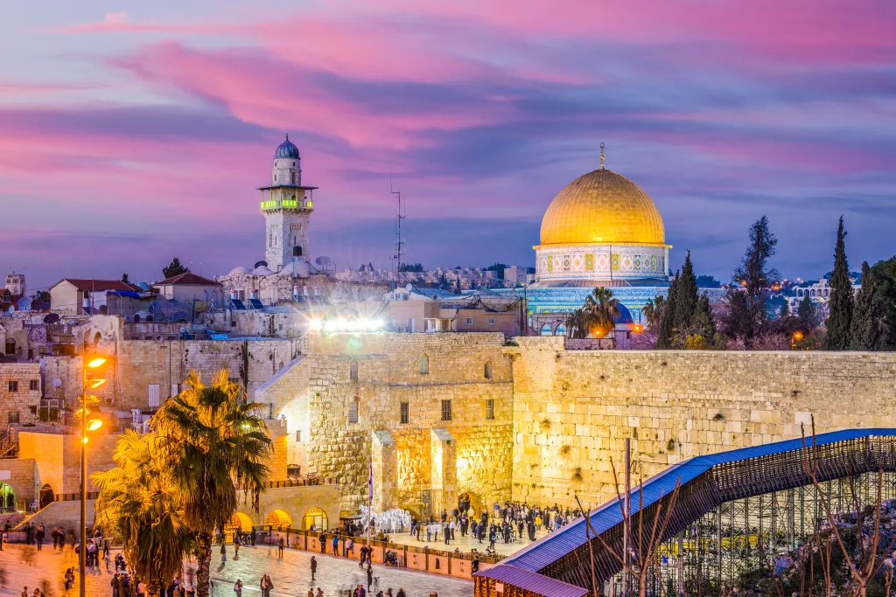
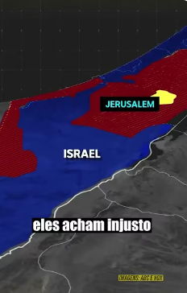
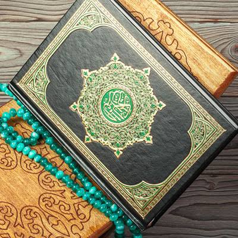
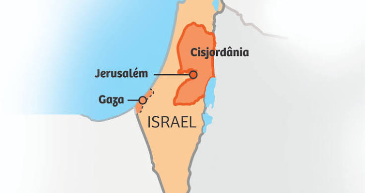

De quem é Jerusalém?
Perfil: PlanoPiloto
Trabalho de Geografia · Oriente Médio
Uma cidade, três religiões

O primeiro vídeo, com nome de: "De quem é Jerusalém?", nos apresenta a história da cidade e os diferentes povos e impérios que tiveram o poder ao longo do tempo. O vídeo mostra como Jerusalém se tornou uma terra marcada por guerras e disputas históricas, territoriais e religiosas. Ele foi publicado pelo perfil "PlanoPiloto". A forma que os acontecimentos são mostrados pode influenciar a opinião do público, dependendo de quais povos e acontecimentos recebem mais destaque, mas não há nenhuma opinião clara no vídeo.
O segundo vídeo, com o nome de: "O que NÃO te contaram sobre ISRAEL X PALESTINA:", apresenta a história da guerra territorial entre Israel e Palestina por Jerusalém. O vídeo mostra o que ocasionou essa guerra e por quê. Ele foi publicado pelo perfil "investigapinhel". Não há opinião clara no vídeo.
Perfil: PlanoPiloto

Perfil: investigapinhel
O conflito entre Israel e Palestina por Jerusalém
É importante dizer que este conflito não é somente uma guerra por religião; temos que perceber que coisas como território e nacionalismo também fazem parte do conflito.
Jerusalém é uma cidade localizada no Oriente Médio entre o Mar Morto e o Mar Mediterrâneo. Ela possui uma importância enorme para três religiões:
Principalmente por conta da Torá e do Tanakh. A cidade também foi o local dos antigos templos judaicos, que possuem grande importância para essa religião.
Principalmente por conta da Bíblia (Novo Testamento). Jerusalém está ligada aos últimos acontecimentos da vida de Jesus, principalmente sua crucificação e ressurreição, segundo a tradição cristã.

Principalmente por conta do Alcorão e da tradição islâmica. A cidade abriga a Mesquita de Al-Aqsa, relacionada à tradição da viagem noturna do profeta Maomé.
As disputas pelo território da Palestina ganharam força com o crescimento do sionismo, que defendia a criação de um Estado judeu, enquanto os árabes palestinos buscavam a independência da região onde viviam.
Em 1917, o governo britânico publicou a Declaração Balfour, apoiando a criação de um lar nacional para o povo judeu na Palestina. Em 1947, a ONU propôs a divisão do território em dois Estados, um judeu e outro árabe, mas as lideranças árabes palestinas e os países árabes rejeitaram a proposta. Jerusalém teria um regime internacional especial.
Após isso, Israel declarou sua independência, iniciando uma guerra com países árabes vizinhos. Em 1948, Jerusalém ficou dividida entre Israel e Jordânia. Em 1967, Israel ocupou Jerusalém Oriental.
Atualmente, os principais envolvidos na disputa política são israelenses e palestinos. O conflito ainda não terminou porque os dois lados não chegaram a um acordo sobre questões como o controle de Jerusalém, a divisão territorial e a criação de um Estado palestino independente. Além disso, décadas de violência e desconfiança dificultam as negociações de paz.

Não, nem um pouco. A imagem que aparece na internet normalmente é algo mais "belo", e é onde normalmente ocultam os defeitos do lugar. Pesquisando levemente a fundo, você percebe o tamanho da desigualdade social e como a maioria esmagadora do Oriente realmente se parece.
Sinto que as imagens retratadas do Oriente Médio são "falsas", não pq não existem, mas sim porque fazem parecer que aquilo é o Oriente, o que claramente não é.
Vejo como um lugar que tem uma cultura RIQUÍSSIMA e que tem guerra pra caramba, mas, entrando em mais detalhes, eu percebi que o Oriente Médio é um lugar afundado por uma enorme desigualdade social, mas que foi um dos lugares mais importantes da história da sociedade como um todo. O Oriente é FOD@!
Aluno: Fabio Sormane M. Campos
Turma: 9ºB
Matéria: Geografia
Professora: Isabela